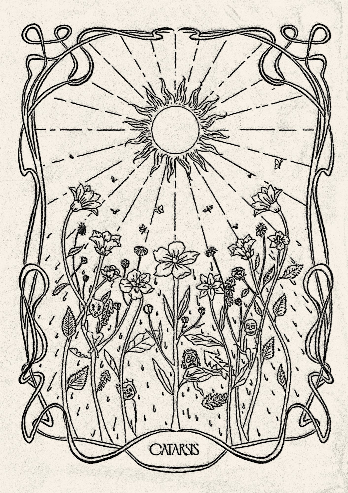

5. Diseño para Catarsis de Marisol
Ilustración para la ropa de merchandising del disco “Catarsis” de Marisol Eichborn
Marisol Eichborn estaba preparando su concierto de debut para presentar su próximo disco. Junto al evento, pensó en una colección de ropa de segunda mano decorada con diseños serigrafiados en homenaje al título del álbum, “Catarsis”.
Me encargó el diseño, que debía recoger la esencia de la catarsis: definida originalmente en el teatro griego como el efecto purificador y liberador que provoca la tragedia, capaz de despertar multitud de emociones. Marisol también quería que el diseño tuviera muchos elementos naturales, entre ellos un gran sol, una estética modernista y, a ser posible, referencias a las máscaras del teatro griego. Además, debía ser un dibujo de línea para facilitar la serigrafía.
A partir de este encargo creé una composición enmarcada, inspirada en las portadas de libros modernistas. El diseño muestra un camino hacia la luz que refleja el proceso catártico. En la parte inferior no hay flora, cae la lluvia y varias criaturas se esconden, inspiradas en las máscaras del teatro griego. A medida que la mirada sube por los tallos de las plantas, la lluvia se transforma en rayos de sol, las flores se abren y aparecen insectos de todo tipo, símbolos de renovación y vitalidad. Todo el diseño está enmarcado por un marco orgánico de estilo modernista, con el título “Catarsis” en la parte inferior.
Después, Marisol y yo estampamos el diseño a mano en un taller de Barcelona.
Hecho con Procreate.
Serigrafiado a mano en “El Gratx”, Barcelona.
Encargo para Marisol Eichborn.
2023
Serigrafiado a mano en “El Gratx”, Barcelona.
Encargo para Marisol Eichborn.
2023